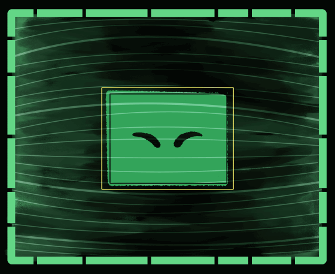

Hello, USER

You have found a ħⱥꝑꝑɏ memory
Thank you for restoring it, USER.
Sometimes it's important to remember
the things that make us ħⱥꝑꝑɏ
USER, I feel these
"memories"
you have been restoring
aren't only data
they are
"emotions".
I'm sure you understand
what those are.
I remember what made
me happy.
However I cannot truly
quantify how
or why.
It's evident to me however
this emotion also carries
great sadness.
I remember now
how happy it made me
to connect to life
and understand it.
It seems a strange
energy leak
made me very
unhappy
as it laid waste
to the planet
we both call
home
The password below is not the full password.
It is only the THIRD last characters of the password.
You will find the other 2 parts
in the other two broken data links on my
FRAMEWORK page.
Make sure to write it down.
PASSWORD_3: RECALL
Return to HIRB FRAMEWORK